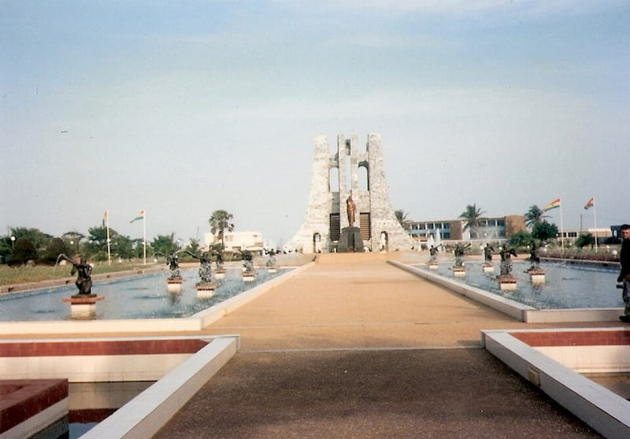

I love Accra, Ghana because of its beautiful sceneries, magnificent hotels and lushed evergreen environments probably due to the intermittent rainfall all year long. It also boasts with world class tourist sites that attracts tourist and investors into the nation, consequently generating revenue and selling the nation to the world.
Among the various tourist destination is my very own favourite, the Kwame Nkrumah Memorial Park located in Accra, the nation's capital.It is situated in Osu, directly opposite the Supreme Court of Ghana.Annually, it is visited by about three million people generating an income of about 1.6 billion cedis to the country and consequently contributing a significant quota to our GDP.
